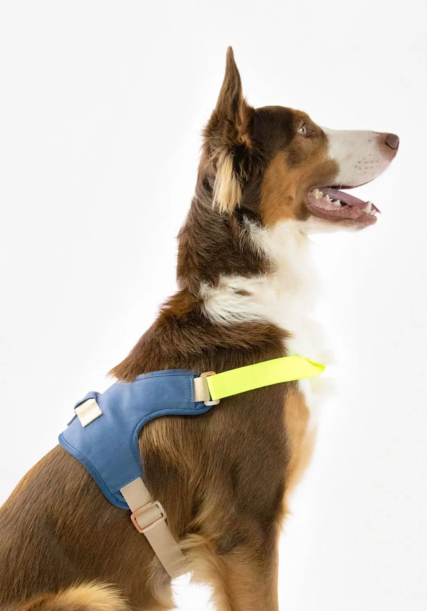
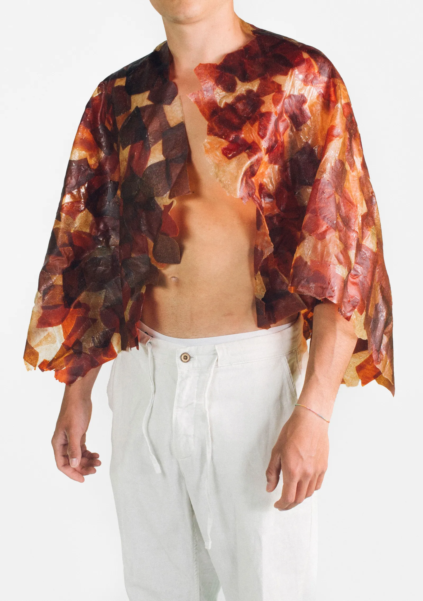
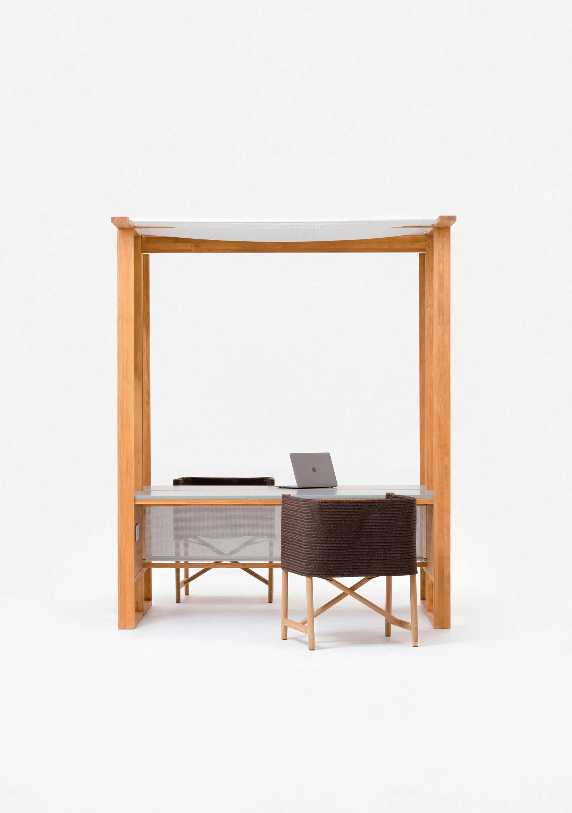

SOBRE MI
Experiencia en las áreas de accesorios, mascotas, decoración y mobiliario. Conocimientos en moda, tejidos, y exploración de nuevos materiales y tendencias.
2



Experiencia destacada:
←2.1. QISU BRAND 2022-2025.
Colecciones de producto sostenible para perros y accesorios para humanos, parte del actual catálogo de Qisu Brand.
2.2. SK-016 2022-2023.
Nuevas tendencias y materiales para una moda sostenible. Fue parte de la exposición "Imaginar els Possibles" del DHub Barcelona.
2.3. OUTDOOR WORKPLACE 2022-2023.
Proyecto de investigación. Exploración de nuevas tipologías de mobiliario y propuesta para el actual catálogo de Kettal.